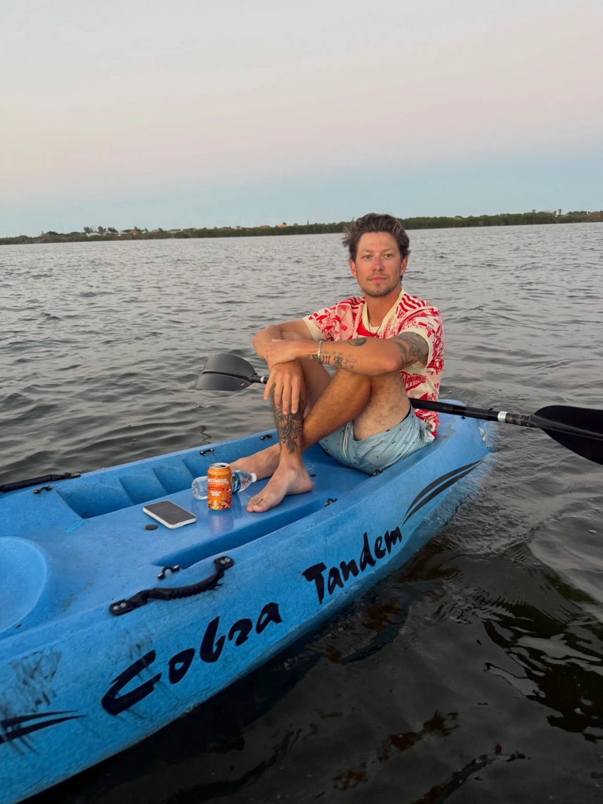

№2
The Florida chapter
He recently spent six months living in Florida — golfing, surfing, and loving
every single minute of it. Ask about the night the water started glowing:
bioluminescence is real, and he's paddled through it.
"Wait — the water glows?"
№3
The long way around
Moved to Texas with his cousin for a few months, then the two of them took off
to Vietnam for the better part of a year. He came back with stories — and
opinions about noodle soup.
"Texas or Vietnam: better food?"
№4
Board game night
The Hayakawa family takes board games seriously, and Kadin loves every minute
at that table. Show up with strategy. Or don't — they'll adopt you either way.
"Which game ends friendships in your family?"
№5
The rocket launches
In Florida he lived up the road from Cape Canaveral, where rocket launches
are basically a neighborhood event. He watched them streak over the beach
more times than he can count. It never once got old.
"Wait — you've seen a real launch?"